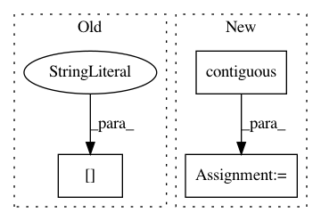

45e1418d553f26de3bf0d58c62bb954d17268c7e,torchsample/functions/affine.py,,F_bilinear_interp2d,#,40
Before Change
y0 = y.floor()
y1 = y0 + 1
stride = torch.LongTensor(input.stride()[1:])
x0_ix = x0.mul(stride[0]).long()
x1_ix = x1.mul(stride[0]).long()
y0_ix = y0.mul(stride[1]).long()
After Change
y0_ix = y0.mul(stride[2]).long()
y1_ix = y1.mul(stride[2]).long()
input_flat = input.view(input.size(0),-1).contiguous()
vals_00 = input_flat.gather(1, x0_ix.add(y0_ix).detach())
vals_10 = input_flat.gather(1, x1_ix.add(y0_ix).detach())
vals_01 = input_flat.gather(1, x0_ix.add(y1_ix).detach())
In pattern: SUPERPATTERN
Frequency: 3
Non-data size: 3
Instances
Project Name: ncullen93/torchsample
Commit Name: 45e1418d553f26de3bf0d58c62bb954d17268c7e
Time: 2017-05-03
Author: ncullen.th@dartmouth.edu
File Name: torchsample/functions/affine.py
Class Name:
Method Name: F_bilinear_interp2d
Project Name: ncullen93/torchsample
Commit Name: 943753c968fe7c0cbafc6e44d60f1b28b42e997b
Time: 2017-05-03
Author: ncullen.th@dartmouth.edu
File Name: torchsample/utils.py
Class Name:
Method Name: th_nearest_interp2d
Project Name: SeanNaren/deepspeech.pytorch
Commit Name: 9ea14875825b2ab63a43ad2f0f5159d99df86d02
Time: 2019-07-29
Author: rasmus.arpe@gmail.com
File Name: model.py
Class Name: Lookahead
Method Name: forward